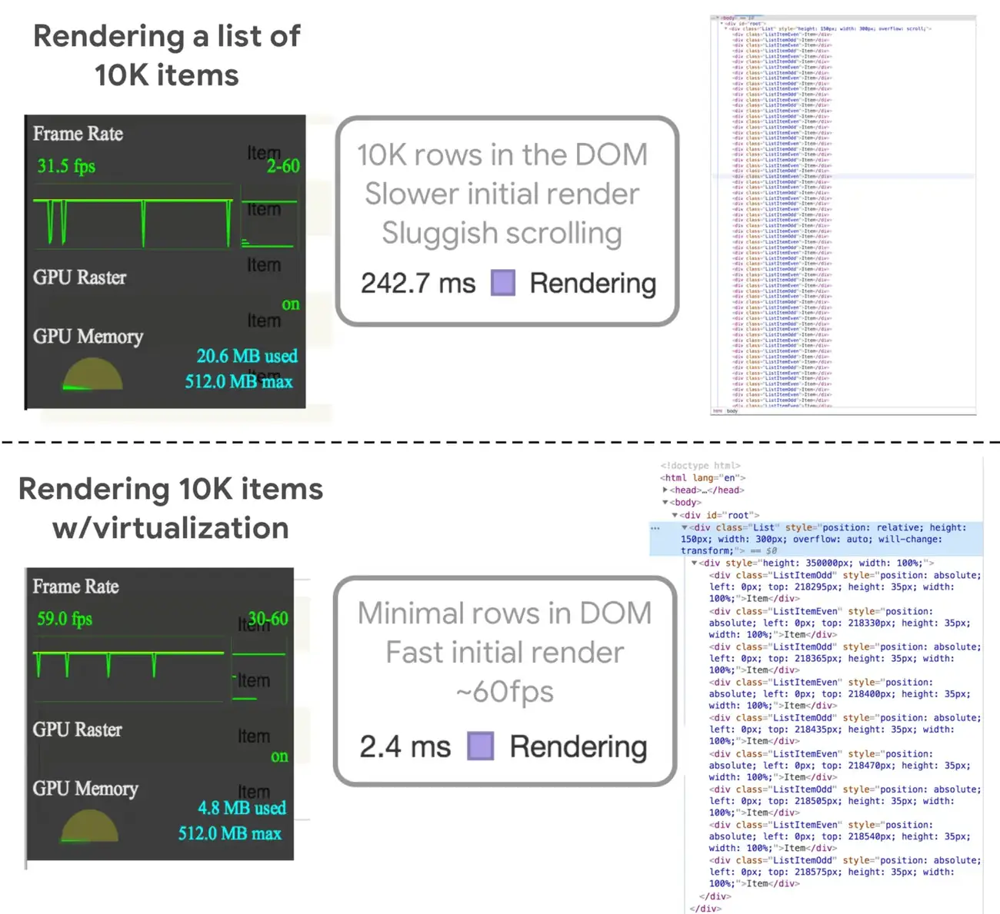
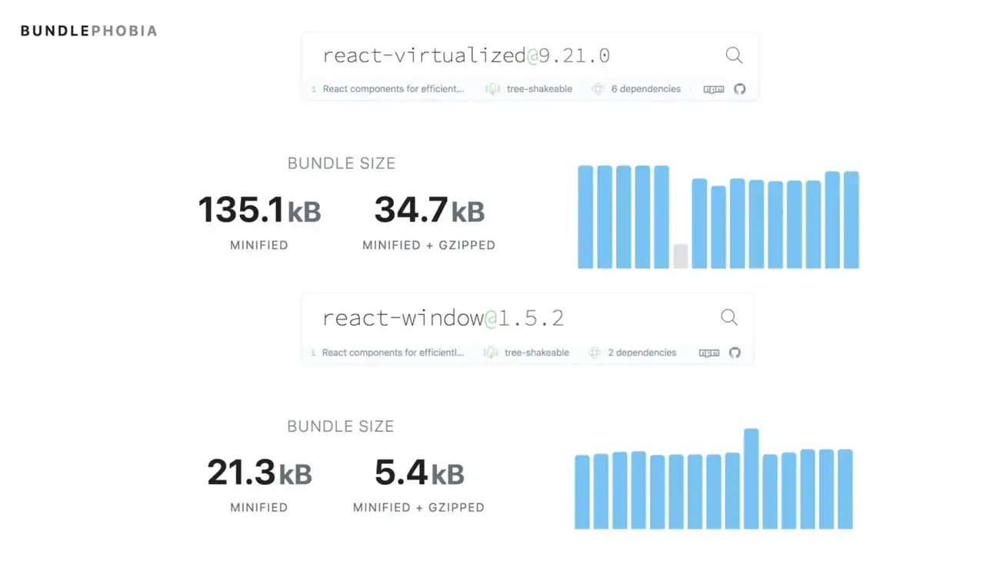
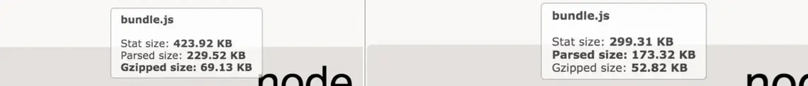
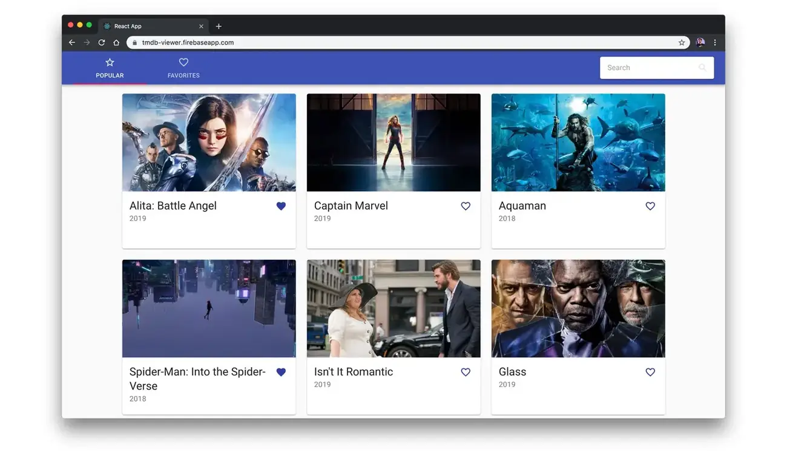

أنماط JavaScript
افتراضية القوائم (List Virtualization)
في هذا الدليل، سنناقش افتراضية القوائم (list virtualization)، المعروفة أيضًا باسم النوافذ (windowing). الفكرة هي عرض الصفوف المرئية فقط من قائمة ديناميكية بدلًا من القائمة كاملة. وتكون الصفوف المعروضة جزءًا صغيرًا فقط، مع تحريك الجزء المرئي (النافذة) عندما يمرر المستخدم. ويمكن أن يحسّن هذا أداء العرض (rendering performance).
إذا كنت تستخدم React وتحتاج إلى عرض قائمة كبيرة من البيانات بكفاءة، فقد تكون على دراية بـ react-virtualized. هذه مكتبة نوافذ أنشأها Brian Vaughn، وتعرض العناصر المرئية فقط داخل قائمة قابلة للتمرير. هذا يعني أنك لا تدفع تكلفة عرض آلاف الصفوف مرة واحدة. ويرافق هذا الدليل فيديو عن افتراضية القوائم باستخدام react-window.
كيف تعمل افتراضية القوائم؟
.LabeledSvgText { font-size: 14px } .NotRenderedLabeledSvgText { font-size: 12px } .LabeledSvgTextMono { font-family: monospace } .scuFalse { fill: #aaa } .scuTrue { fill: #c0e0d0 } .scuAnimatedLine,.scuFrozenLine { stroke-width: 1px; stroke-dasharray: 2,4; stroke: #222 } .scuAnimatedLine { -webkit-animation: dash .5s linear; animation: dash .5s linear; -webkit-animation-iteration-count: infinite; animation-iteration-count: infinite } @-webkit-keyframes dash { 0% { stroke-dashoffset: 6 } to { stroke-dashoffset: 0 } } @keyframes dash { 0% { stroke-dashoffset: 6 } to { stroke-dashoffset: 0 } } .scuArrow { fill: #222 } .scuText { font-family: monospace; font-size: 12px } .CrossHatchRectPattern { stroke: #fff; stroke-width: 10 } .CrossHatchRectHidden,.CrossHatchRectVisible { -webkit-transition: all 2.5s ease; transition: all 2.5s ease } .CrossHatchRectHidden { opacity: 0 } .CrossHatchRectVisible { opacity: .25 } .HowWorksGroup { -webkit-transform: skewX(0deg); -ms-transform: skewX(0deg); transform: skewX(0deg) } .HowWorksGroupSkewed { -webkit-transition: all 1s ease; transition: all 1s ease; -webkit-transform: skewX(15deg); -ms-transform: skewX(15deg); transform: skewX(15deg) } .HowWorksOuterGroup { -webkit-transform: translate(-75px,-68px); -ms-transform: translate(-75px,-68px); transform: translate(-75px,-68px) } .HowWorksOuterGroup,.HowWorksOuterRect { -webkit-transition: -webkit-transform 1s ease; transition: -webkit-transform 1s ease; transition: transform 1s ease; transition: transform 1s ease,-webkit-transform 1s ease } .HowWorksOuterRect { rx: 8px; ry: 8px; stroke-width: 4px; fill: transparent; stroke: #222 } .HowWorksOuterRectShifted { -webkit-transform: translateY(-30px); -ms-transform: translateY(-30px); transform: translateY(-30px) } .HowWorksHidden { opacity: 0 } .HowWorksHidden,.HowWorksVisible { -webkit-transition: all 1s ease; transition: all 1s ease } .HowWorksVisible { opacity: 1 } .HowWorksInnerLineAnimated { -webkit-animation: scrolling 1s linear; animation: scrolling 1s linear; -webkit-animation-iteration-count: infinite; animation-iteration-count: infinite } @-webkit-keyframes scrolling { 0% { -webkit-transform: translateY(0); transform: translateY(0) } to { -webkit-transform: translateY(30px); transform: translateY(30px) } } @keyframes scrolling { 0% { -webkit-transform: translateY(0); transform: translateY(0) } to { -webkit-transform: translateY(30px); transform: translateY(30px) } } .HowWorksInnerLine,.HowWorksInnerRect { fill: transparent; stroke-width: 1px; stroke-dasharray: 2,4; stroke: #222 } .HowWorksRowGroup { font-size: 10px } .HowWorksRowEstimated,.HowWorksRowNotRendered,.HowWorksRowRendered { stroke-width: 2px; stroke: #fff } .HowWorksRowEstimated { fill: #ddd } .HowWorksRowRendered { fill: #a2d4da } .HowWorksRowNotRendered { fill: #aaa } .HowWorksViewportLine { stroke-width: 1px; stroke-dasharray: 2,4; stroke: #222; -webkit-transition-delay: 1s; transition-delay: 1s } .HowWorksScrollTrack { fill: rgba(0,0,0,.1) } .HowWorksScrollThumb { fill: rgba(0,0,0,.5) } .HowWorksScrollingLoop { -webkit-animation: scrollingLoop 2.5s linear; animation: scrollingLoop 2.5s linear; -webkit-animation-iteration-count: infinite; animation-iteration-count: infinite } @-webkit-keyframes scrollingLoop { 0% { -webkit-transform: translateY(0); transform: translateY(0) } 50% { -webkit-transform: translateY(-40px); transform: translateY(-40px) } to { -webkit-transform: translateY(0); transform: translateY(0) } } @keyframes scrollingLoop { 0% { -webkit-transform: translateY(0); transform: translateY(0) } 50% { -webkit-transform: translateY(-40px); transform: translateY(-40px) } to { -webkit-transform: translateY(0); transform: translateY(0) } } .HowWorksScrollingThumbLoop { -webkit-animation: scrollingThumbLoop 2.5s linear; animation: scrollingThumbLoop 2.5s linear; -webkit-animation-iteration-count: infinite; animation-iteration-count: infinite } @-webkit-keyframes scrollingThumbLoop { 0% { -webkit-transform: translateY(0); transform: translateY(0) } 50% { -webkit-transform: translateY(15px); transform: translateY(15px) } to { -webkit-transform: translateY(0); transform: translateY(0) } } @keyframes scrollingThumbLoop { 0% { -webkit-transform: translateY(0); transform: translateY(0) } 50% { -webkit-transform: translateY(15px); transform: translateY(15px) } to { -webkit-transform: translateY(0); transform: translateY(0) } } .HowWorksTopConditionalScrollingFill { -webkit-animation: topConditionalScrollingFill 2.5s linear; animation: topConditionalScrollingFill 2.5s linear; -webkit-animation-iteration-count: infinite; animation-iteration-count: infinite } @-webkit-keyframes topConditionalScrollingFill { 0% { fill: #a2d4da } 14% { fill: #a2d4da } 15% { fill: #aaa } 84% { fill: #aaa } 85% { fill: #a2d4da } } @keyframes topConditionalScrollingFill { 0% { fill: #a2d4da } 14% { fill: #a2d4da } 15% { fill: #aaa } 84% { fill: #aaa } 85% { fill: #a2d4da } } .HowWorksBottomConditionalScrollingFill { -webkit-animation: bottomConditionalScrollingFill 2.5s linear; animation: bottomConditionalScrollingFill 2.5s linear; -webkit-animation-iteration-count: infinite; animation-iteration-count: infinite } @-webkit-keyframes bottomConditionalScrollingFill { 0% { fill: #aaa } 14% { fill: #aaa } 15% { fill: #a2d4da } 84% { fill: #a2d4da } 85% { fill: #aaa } } @keyframes bottomConditionalScrollingFill { 0% { fill: #aaa } 14% { fill: #aaa } 15% { fill: #a2d4da } 84% { fill: #a2d4da } 85% { fill: #aaa } } .List { width: 15rem; height: 15rem; overflow: auto; font-size: 12px; border: 1px solid #cfd8dc; margin: 1rem 0 } .ListWithBorderRadius { border-radius: 1rem; border-width: 4px; overflow: auto } .ListRow { padding: 0 .5rem; width: 100%; height: 40px; line-height: 40px; -webkit-transition: all 0; transition: all 0; white-space: pre; overflow: hidden; text-overflow: ellipsis; display: -webkit-box; display: -webkit-flex; display: -ms-flexbox; display: flex; -webkit-box-orient: horizontal; -webkit-box-direction: normal; -webkit-flex-direction: row; -ms-flex-direction: row; flex-direction: row; -webkit-box-align: center; -webkit-align-items: center; -ms-flex-align: center; align-items: center; border-bottom: 1px solid #e9e9e9 } .ListRowActived { background-color: #e9e9e9 } .RowNumber { -webkit-box-flex: 0; -webkit-flex: 0 0 2rem; -ms-flex: 0 0 2rem; flex: 0 0 2rem; display: inline-block; width: 2rem; height: 2rem; line-height: 2rem; border-radius: 2rem; text-align: center; color: #fff } .RowStack { -webkit-box-flex: 1; -webkit-flex: 1 0 5.25rem; -ms-flex: 1 0 5.25rem; flex: 1 0 5.25rem; margin: 0 .5rem; font-size: 20px } .RowName { font-size: .8rem; line-height: .8rem; font-weight: 700 } .RowRowNumber { font-size: .6rem; line-height: .6rem; margin-top: .25rem } .RowStar { -webkit-box-flex: 0; -webkit-flex: 0 0 auto; -ms-flex: 0 0 auto; flex: 0 0 auto; font-size: 1rem!important; color: #ff502f!important } .ListScrolling { font-style: italic; opacity: .5 } .BuildingBlocksSvgWrapper { max-width: 100% } .svgOuterBox { fill: transparent; stroke: #222; stroke-width: 4px; rx: 8px; ry: 8px } .svgCollectionBoxNotRendered,.svgGridBoxNotRendered,.svgListRowNotRendered,.svgTableColumnNotRendered { fill: #aaa; stroke: transparent } .svgCollectionBox,.svgGridBox,.svgListRow,.svgTableColumn { fill: #c0e0d0; stroke: transparent } .svgTableHeader { fill: transparent; stroke: #222 } .svgNotRenderedDimmer { fill: #fff; opacity: .65 } .AnimatedListRow { display: -webkit-inline-box; display: -webkit-inline-flex; display: -ms-inline-flexbox; display: inline-flex; -webkit-box-align: center; -webkit-align-items: center; -ms-flex-align: center; align-items: center; padding: 0 .5rem; background-color: #a2d4da; width: 100%; height: 26px; margin: 2px 0; -webkit-transition: all 0; transition: all 0 } .AnimatedList--Overscan { background-color: #c0e0d0 } .AnimatedList--Invisible { background-color: #aaa } .AnimatedList--Invisible,.AnimatedList--Overscan { -webkit-transition: all .5s; transition: all .5s } .AnimatedList { position: relative; width: 150px; height: 300px; margin: 8px; font-family: -apple-system,BlinkMacSystemFont,Segoe UI,Roboto,Oxygen-Sans,Ubuntu,Cantarell,Helvetica Neue,sans-serif; font-size: 12px } .AnimatedList,.Positioned { overflow: visible } .InnerFrame { position: absolute; top: 100px; height: 100px; left: -8px; right: -8px; border: 4px solid #222; border-radius: 8px } .AnimatedListDimmerBottom,.AnimatedListDimmerTop { position: absolute; left: 0; right: 0; background-color: #fff; opacity: .35 } .AnimatedListDimmerBottom { top: 200px; height: 130px } .AnimatedListDimmerTop { top: 0; height: 100px } .BottomGroup,.MiddleGroup,.TopGroup { -webkit-transition: all .25s linear; transition: all .25s linear } .MiddleGroup { position: relative; z-index: 2 } .BottomGroupScaled { -webkit-transform: scaleY(.5) translateY(-137px); -ms-transform: scaleY(.5) translateY(-137px); transform: scaleY(.5) translateY(-137px) } .MiddleGroupScaled { -webkit-transform: translateY(-35px); -ms-transform: translateY(-35px); transform: translateY(-35px) } .TopGroupScaled { -webkit-transform: scaleY(.5) translateY(-30px); -ms-transform: scaleY(.5) translateY(-30px); transform: scaleY(.5) translateY(-30px) } .OuterScrollContainer { position: absolute; top: 5px; width: 100px; height: 100px; border: 4px solid #222; border-radius: 8px } .UnscaledListItem,.UnscaledListItemActive { display: block; width: 88px; height: 26px; margin: 2px 6px } .UnscaledListItem { background-color: #aaa } .UnscaledListItemActive { background-color: #c0e0d0 } .SortableListRow { cursor: pointer; font-size: 12px; -webkit-user-select: none; -moz-user-select: none; -ms-user-select: none; user-select: none; border-bottom: 1px solid #e9e9e9 } .SortableListRow:hover { background-color: #e9e9e9 } .SortableListRowActive { font-size: 13px; background-color: #c0e0d0; overflow: hidden } .ResizableListRow { display: -webkit-box; display: -webkit-flex; display: -ms-flexbox; display: flex; -webkit-box-orient: vertical; -webkit-box-direction: normal; -webkit-flex-direction: column; -ms-flex-direction: column; flex-direction: column; -webkit-box-pack: center; -webkit-justify-content: center; -ms-flex-pack: center; justify-content: center; padding: 0 .5rem; border-bottom: 1px solid #e9e9e9 } .DragHandle { position: absolute; bottom: 0; left: 0; right: 0; height: 16px; z-index: 2; cursor: row-resize; color: rgba(0,0,0,.2) } .DragHandle:hover { background-color: rgba(0,0,0,.1) } .DragHandleActive,.DragHandleActive:hover { color: rgba(0,0,0,.6); z-index: 3 } .DragHandleIcon { -webkit-box-flex: 0; -webkit-flex: 0 0 12px; -ms-flex: 0 0 12px; flex: 0 0 12px; display: -webkit-box; display: -webkit-flex; display: -ms-flexbox; display: flex; -webkit-box-orient: vertical; -webkit-box-direction: normal; -webkit-flex-direction: column; -ms-flex-direction: column; flex-direction: column; -webkit-box-pack: center; -webkit-justify-content: center; -ms-flex-pack: center; justify-content: center; -webkit-box-align: center; -webkit-align-items: center; -ms-flex-align: center; align-items: center } .GridContainer { height: 300px; position: relative; border: 1px solid #dadada; overflow: hidden } .TopLeftCell { height: 40px; width: 50px; background-color: #f3f3f3; border-bottom: 4px solid #bcbcbc; border-right: 4px solid #bcbcbc } .MainGrid { position: absolute!important; left: 50px; top: 40px } .MainGridCell { display: -webkit-box; display: -webkit-flex; display: -ms-flexbox; display: flex; -webkit-box-orient: horizontal; -webkit-box-direction: normal; -webkit-flex-direction: row; -ms-flex-direction: row; flex-direction: row; -webkit-box-align: center; -webkit-align-items: center; -ms-flex-align: center; align-items: center; -webkit-box-pack: start; -webkit-justify-content: flex-start; -ms-flex-pack: start; justify-content: flex-start; padding: .25rem; outline: 0; border: none; border-right: 1px solid #dadada; border-bottom: 1px solid #dadada; background-color: #fff; font-size: 1rem } .MainGridCellFocused { box-shadow: inset 0 0 0 2px #4285fa } .LeftGrid { left: 0; top: 40px } .LeftGrid,.TopGrid { position: absolute!important; overflow: hidden!important } .TopGrid { left: 50px; top: 0; height: 40px } .FixedGridCell { display: -webkit-box; display: -webkit-flex; display: -ms-flexbox; display: flex; -webkit-box-orient: horizontal; -webkit-box-direction: normal; -webkit-flex-direction: row; -ms-flex-direction: row; flex-direction: row; -webkit-box-align: center; -webkit-align-items: center; -ms-flex-align: center; align-items: center; -webkit-box-pack: center; -webkit-justify-content: center; -ms-flex-pack: center; justify-content: center; background-color: #f3f3f3; border-right: 1px solid #ccc; border-bottom: 1px solid #ccc } .FixedGridCellFocused { background-color: #ddd } .Collection { border: 1px solid #ddd } .CollectionCell { display: -webkit-box; display: -webkit-flex; display: -ms-flexbox; display: flex; -webkit-box-orient: horizontal; -webkit-box-direction: normal; -webkit-flex-direction: row; -ms-flex-direction: row; flex-direction: row; -webkit-box-align: center; -webkit-align-items: center; -ms-flex-align: center; align-items: center; -webkit-box-pack: center; -webkit-justify-content: center; -ms-flex-pack: center; justify-content: center; color: #fff } .CollectionCellCircle { border-radius: 100% } Not RenderedNot RenderedRenderedRenderedRenderedRenderedNot RenderedNot RenderedNot RenderedNot Rendered
- تعني «افتراضية» قائمة العناصر **الحفاظ على نافذة** و**تحريك هذه النافذة حول القائمة**. تعمل النوافذ في react-virtualized بطريقتين:
- وجود عنصر DOM صغير (مثل ``) بموضع نسبي (النافذة)
- وجود عنصر DOM كبير للتمرير
- وضع عناصر DOM داخل الحاوية بموضع مطلق، وضبط أنماط
topوleftوwidthوheight.
بدلًا من عرض آلاف العناصر دفعة واحدة، وهو ما قد يبطئ العرض الأولي أو يؤثر في أداء التمرير، ركز الافتراضية على عرض العناصر المرئية للمستخدم فقط.
يمكن أن يساعد ذلك في الحفاظ على سرعة عرض القوائم على الأجهزة متوسطة الأدئة ومنخفضة المواصفات. يمكنك جلب عناصر وعرضها أكثر مع تمرير المستخدم، مع تفريغ العناصر السابقة واستبدالها بأخرى جديدة.
بديل أصغر لـ react-virtualized
react-window هو إعادة كتابة لـ react-virtualized من المؤلف نفسه، ويهدف إلى أن يكون أصغر وأسرع وأكثر قابلية لإزالة الشيفرة الميتة.
في مكتبة قابلة لإزالة الشيفرة الميتة، يعتمد الحجم على واجهات API التي تختار استخدامها. لوحظ توفير نحو 20–30KB بعد الضغط عند استخدامه بدلًا من react-virtualized:
واجهات API في الحزمتين متشابهة، ويميل react-window إلى البساطة عند اختلافهما. تتضمن مكوّنات react-window:
القائمة
تعرض القوائم قائمة نوافذ من العناصر، أي أن الصفوف المرئية فقط تظهر للمستخدم، مثل FixedSizeList وVariableSizeList. تستخدم القوائم Grid داخليًا لعرض الصفوف وتمرير الخصائص إلى الشبكة الداخلية.
صفصفصفصفصفصفصفلم يُعرضلم يُعرض
عرض قائمة بيانات باستخدام React
إليك مثالًا لعرض قائمة بيانات بسيطة (itemsArray) باستخدام React:
import React from "react";
import ReactDOM from "react-dom";
const itemsArray = [
{ name: "Drake" },
{ name: "Halsey" },
{ name: "Camillo Cabello" },
{ name: "Travis Scott" },
{ name: "Bazzi" },
{ name: "Flume" },
{ name: "Nicki Minaj" },
{ name: "Kodak Black" },
{ name: "Tyga" },
{ name: "Buno Mars" },
{ name: "Lil Wayne" }, ...
]; // our data
const Row = ({ index, style }) => (
<div className={index % 2 ? "ListItemOdd" : "ListItemEven"} style={style}>
{itemsArray[index].name}
</div>
);
const Example = () => (
<div
style={{
height: 150,
width: 300
}}
class="List"
>
{itemsArray.map((item, index) => Row({ index }))}
</div>
);
ReactDOM.render(<Example />, document.getElementById("root"));
عرض قائمة باستخدام react-window
وهذا هو المثال نفسه باستخدام FixedSizeList من react-window، الذي يأخذ بعض الخصائص (width وheight وitemCount وitemSize) ودالة عرض صف تُمرر كطفل:
import React from "react";
import ReactDOM from "react-dom";
import { FixedSizeList as List } from "react-window";
const itemsArray = [...]; // our data
const Row = ({ index, style }) => (
<div className={index % 2 ? "ListItemOdd" : "ListItemEven"} style={style}>
{itemsArray[index].name}
</div>
);
const Example = () => (
<List
className="List"
height={150}
itemCount={itemsArray.length}
itemSize={35}
width={300}
>
{Row}
</List>
);
ReactDOM.render(<Example />, document.getElementById("root"));
يمكنك تجربة FixedSizeList على CodeSandbox.
الشبكة
تعرض Grid بيانات جدولية مع افتراضية على المحورين الرأسي والأفقي، مثل FizedSizeGrid وVariableSizeGid. وتعرض فقط خلايا Grid اللازمة لملء نفسها وفق مواضع التمرير الحالية.
خليةخليةخليةخليةخليةخليةخليةخليةخليةخليةلم يُعرضلم يُعرضلم يُعرضلم يُعرضلم يُعرضلم يُعرضلم يُعرضلم يُعرض
إذا أردنا عرض القائمة نفسها السابقة بتخطيط شبكي، مع افتراض أن مدخلاتنا مصفوفة متعددة الأبعاد، فيمكننا استخدام FixedSizeGrid كما يلي:
import React from 'react';
import ReactDOM from 'react-dom';
import { FixedSizeGrid as Grid } from 'react-window';
const itemsArray = [
[{},{},{},...],
[{},{},{},...],
[{},{},{},...],
[{},{},{},...],
];
const Cell = ({ columnIndex, rowIndex, style }) => (
<div
className={
columnIndex % 2
? rowIndex % 2 === 0
? 'GridItemOdd'
: 'GridItemEven'
: rowIndex % 2
? 'GridItemOdd'
: 'GridItemEven'
}
style={style}
>
{itemsArray[rowIndex][columnIndex].name}
</div>
);
const Example = () => (
<Grid
className="Grid"
columnCount={5}
columnWidth={100}
height={150}
rowCount={5}
rowHeight={35}
width={300}
>
{Cell}
</Grid>
);
ReactDOM.render(<Example />, document.getElementById('root'));
يمكنك أيضًا تجربة FixedSizeGrid على CodeSandbox.
أمثلة react-window الأكثر تفصيلًا
نفّذ Scott Taylor أداة Pitchfork music reviews scraper مفتوحة المصدر (المصدر) باستخدام react-window وFixedSizeGrid. وفيما يلي فيديو للتطبيق أثناء عمله:
يستخدم Pitchfork scraper مكتبة react-window-infinite-loader (عرض تجريبي)، التي تساعد على تقسيم مجموعات البيانات الكبيرة إلى أجزاء يمكن تحميلها عند التمرير إليها.
إليك مقطعًا من طريقة دمج react-window-infinite-loader في هذا التطبيق:
import React, { Component } from 'react';
import { FixedSizeGrid as Grid } from 'react-window';
import InfiniteLoader from 'react-window-infinite-loader';
...
render() {
return (
<InfiniteLoader
isItemLoaded={this.isItemLoaded}
loadMoreItems={this.loadMoreItems}
itemCount={this.state.count + 1}
>
{({ onItemsRendered, ref }) => (
<Grid
onItemsRendered={this.onItemsRendered(onItemsRendered)}
columnCount={COLUMN_SIZE}
columnWidth={180}
height={800}
rowCount={Math.max(this.state.count / COLUMN_SIZE)}
rowHeight={220}
width={1024}
ref={ref}
>
{this.renderCell}
</Grid>
)}
</InfiniteLoader>
);
}
}
قد تجد الالتزام الذي نقل التطبيق من react-virtualized مفيدًا.
تتوفر أيضًا تنفيذات لـ Pitchfork scraper تستخدم FixedSizeList (عرض تجريبي، عرض على Pixel):
وهذا مقطع من التنفيذ:
return (
<InfiniteLoader
isItemLoaded={this.isItemLoaded}
loadMoreItems={this.loadMoreItems}
itemCount={this.state.count}
>
{({ onItemsRendered, ref }) => (
<section>
<FixedSizeList
itemCount={this.state.count}
itemSize={ROW_HEIGHT}
onItemsRendered={onItemsRendered}
height={this.state.height}
width={this.state.width}
ref={ref}
>
{this.renderCell}
</FixedSizeList>
</section>
)}
</InfiniteLoader>
);
ماذا كانت احتياجاتنا أكثر تعقيدًا لحل افتراضية شبكية؟ وجدنا The Movie Database وتطبيق العرض الذي استخدم react-virtualized وInfinite Loader في الداخل.
لم يستغرق نقله إلى react-window وreact-window-infinite-loader وقتًا طويلًا، لكننا اكتشفنا أن بعض المكونات غير مدعومة بعد. ومع ذلك، كانت الوظيفة النهائية قريبة جدًا.
كانت المكونات الناقصة هي WindowScroller وAutoSizer، وسننظر إليها تاليًا.
...
return (
<section>
<AutoSizer disableHeight>
{({width}) => {
const {movies, hasMore} = this.props;
const rowCount = getRowsAmount(width, movies.length, hasMore);
...
return (
<InfiniteLoader
ref={this.infiniteLoaderRef}
...
{({onRowsRendered, registerChild}) => (
<WindowScroller>
{({height, scrollTop}) => (
ما الذي ينقص react-window؟
لا يملك react-window بعد واجهة API الكاملة الخاصة بـ react-virtualized، لذا راجع وثائق المقارنة إذا كنت تفكر فيه. ما الذي ينقص؟
- WindowScroller — مكوّن في
react-virtualizedيتيح تمرير القوائم وفق مواضع تمرير النافذة. لا توجد حاليًا خطط لتنفيذه في react-window، لذا ستحل المشكلة في userland. - AutoSizer — HOC يتمدد ليملأ المساحة المتاحة ويضبط عرض وارتفاع الطفل تلقائيًا. نفّذ Brian هذا كحزمة مستقلة. اتبع المشكلة لمعرفة آخر تحديث.
- CellMeasurer — HOC يقيس محتوى الخلية تلقائيًا عبر عرضه بطريقة غير مرئية للمستخدم. اتبع هنا للمناقشة.
ومع ذلك، وجدنا react-window كافيًا لمعظم احتياجاتنا بما يوفره افتراضيًا.
التحسينات في منصة الويب
تدعم بعض المتصفحات الحديثة الآن خاصية CSS content-visibility. تتيح content-visibility:auto تخطي عرض المحتوى خارج الشاشة ورسمه حتى الحاجة إليه. إذا كان لديك مستند HTML طويلًا مكلف العرض، فجرّب هذه الخاصية.
لعرض القوائم ذات المحتوى الديناميكي، ما زلت أنصح باستخدام مكتبة مثل react-window. يصعب أن تتغلب نسخة تستخدم content-visbility:hidden على نسخة تستخدم display:none بشدة أو إزالة عُقد DOM خارج الشاشة كما تفعل مكتبات افتراضية القوائم اليوم.
قراءة إضافية
لمزيد من القراءة عن react-window وreact-virtualized، راجع:
- عرض القوائم عالية الأداء باستخدام react-window
- إنشاء عروض React أكثر كفاءة باستخدام Windowing
- عرض القوائم باستخدام react-virtualized
- عرض القوائم الكبيرة باستخدام react-virtualized



